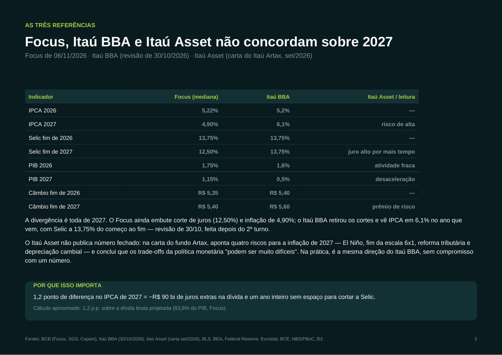

Renda fixa · juros futuros
Renda fixa · juros futuros
O ajuste da curva DI
Vértices jan/2028, jan/2032 e jan/2037 entre 06/10 e 27/10/2026 (pós 1º e 2º turno), com o mesmo olhar sobre a pandemia (2020) e o caso Americanas (jan/2023).
Abrir análise PDF
Cenários macro · novembro/2026Brasil, EUA, Europa e China
Focus de 06/11, Itaú BBA de 30/10 e Itaú Asset: juros, inflação, PIB e o fato relevante de outubro — a eleição brasileira e o choque de 26/10.
Abrir relatório PDF